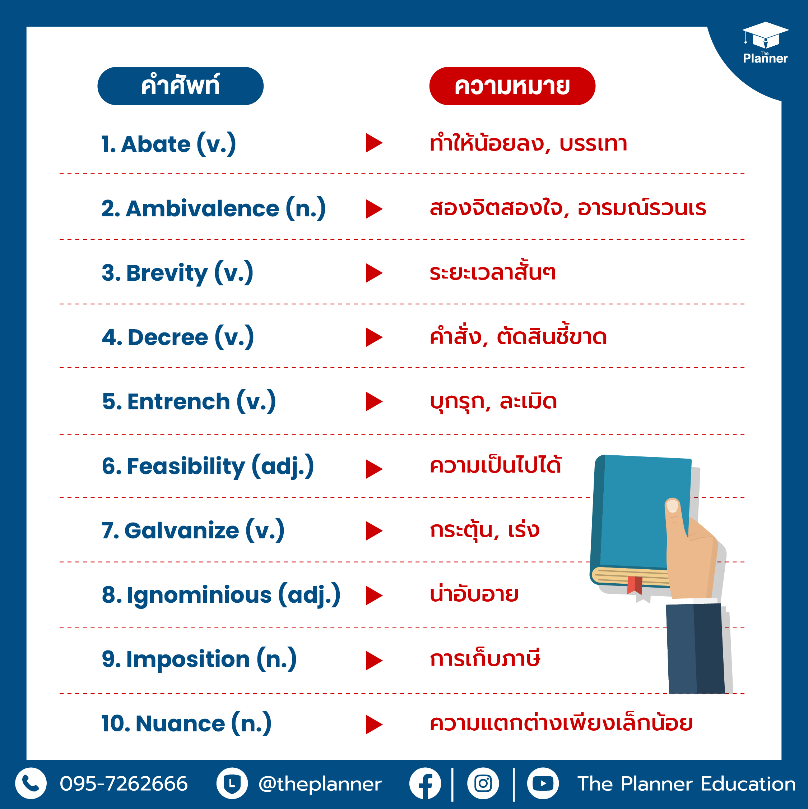

คลังคำศัพท์และอรรถศาสตรเชิงลึก (Vocabulary, Lexicon, and Semantics)

รายละเอียดการเรียนรู้: การสร้างและขยายคลังคำศัพท์ในสมอง (Mental Lexicon) ไม่ใช่เพียงการท่องจำคำแปลแบบตัวต่อตัว แต่เป็นการเข้าใจความหมาย นัยยะ และโครงสร้างของคำ เจาะลึกองค์ประกอบ: Morphology (สรีรวิทยาของคำ): การถอดรหัสคำผ่านรากศัพท์ (Roots), อุปสรรค/คำเติมหน้า (Prefixes), และปัจจัย/คำเติมท้าย (Suffixes) เพื่อให้สามารถวิเคราะห์และคาดเดาความหมายของคำศัพท์ใหม่ที่ไม่เคยพบมาก่อนได้ Denotation vs. Connotation: การแยกแยะระหว่างความหมายตรงตามพจนานุกรม (Denotation) กับความหมายแฝง/ความรู้สึกที่ซ่อนอยู่ในคำ (Connotation) เช่น ความหมายเชิงบวก เชิงลบ หรือเชิงเป็นกลาง Collocations & Fixed Expressions: การเรียนรู้กลุ่มคำที่ต้องใช้คู่กันตามธรรมชาติของเจ้าของภาษา (เช่น ใช้ make a decision ไม่ใช้ do a decision) Idioms, Slang & Figures of Speech: การเข้าใจสำนวน ภาษาถิ่น คำสแลง และการเปรียบเปรยเชิงวรรณศิลป์ ซึ่งไม่สามารถแปลความหมายตรงตัวได้